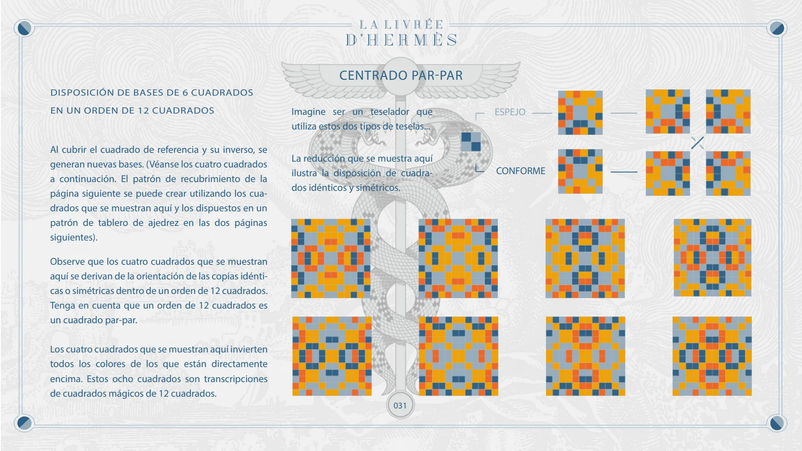

La aritmogeometría construye los cuadrados mágicos con un método geométrico y no aritmético: cada número se coloca como una figura, derivada de la cruz ansada, y el conjunto se transcribe directamente en ligamento Jacquard. El término lo propone Anibal Edelberto Amiot en La Livrée d'Hermès (2026).
Un ejemplo: el orden 12 del libro
La lámina 031 del tratado muestra ocho cuadrados de 12 × 12 casillas. Cuatro son cuadrados de orden 6 dispuestos en marco, como copias conformes o en espejo; los otros cuatro invierten sus colores. El libro los llama «la retranscripción de cuadrados mágicos de orden 12» (original francés). Cada casilla es una figura de color, y ese dibujo es el que se teje tal cual en el telar Jacquard.

Un cuadrado mágico de orden 12 tiene constante 12 × 145 / 2 = 870. El libro cuenta 64 por ensamblaje.
Los resultados clave, con su estado
- 2 cruces ansadas de orden 6 — verificado (registro del repositorio).
- 256 cuadrados solares de orden 6, 128 por cruz — verificado (registro del repositorio).
- 64 cuadrados mágicos de orden 12 por ensamblaje, constante 870 — verificado (registro del repositorio).
- 360 capas: 15 familias de ejes × 4 naturalezas × 6 niveles — verificado (relanzado en CI).
- Los 256 motivos que tienen página dibujan solo 224 cuadrículas distintas — verificado (relanzado en CI).
Cada línea se puede releer en cifras y fuentes y en resultats-etablis.json, con el script que la reproduce y la línea que imprime.
Para ir más lejos: el libro, el léxico, cifras y fuentes.